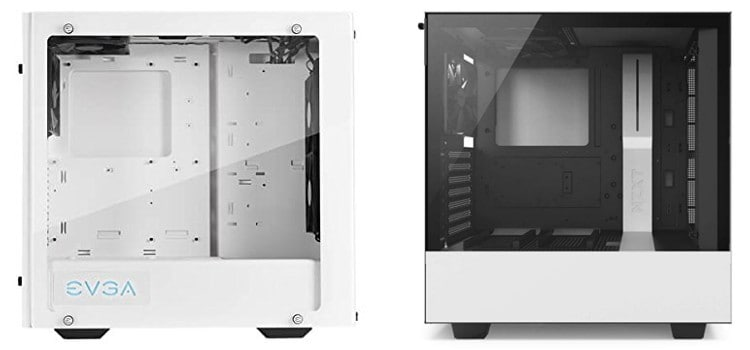

Case
Finally! We have reached the last part you will need when constructing your PC. That part is the PC Case. Now although this isn’t essential to boot up and run a computer, it is necessary to clean the parts protected and clean. Also, a nice case can elevate the look and feel of a computer. Cases also come with fans to cool down your PC. All the demanding components can produce a lot of heat, the fans help make sure the PC doesn’t overheat. Cases can come in many different sizes, if you are building a very large and powerful PC, you might go for a larger PC. If you are building a small PC for work purposes, you might choose to go with a smaller case.
Click the next page button to learn about the different manufacturers!